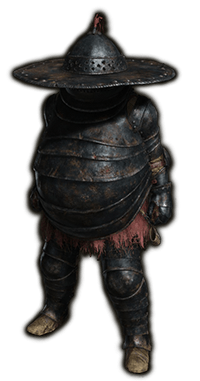

Armors
The elden ring armor is a fundamental factor because there is no better attack than a good defense, this way the enemies will not destroy us with one blow, it is very important not only aesthetically but also for some effects that these entail.
you can get rock-hard armor, such as this one

Such as masks that increase bleeding such as the White mask.

Ancestral mage armor to increase your effectiveness as a mage